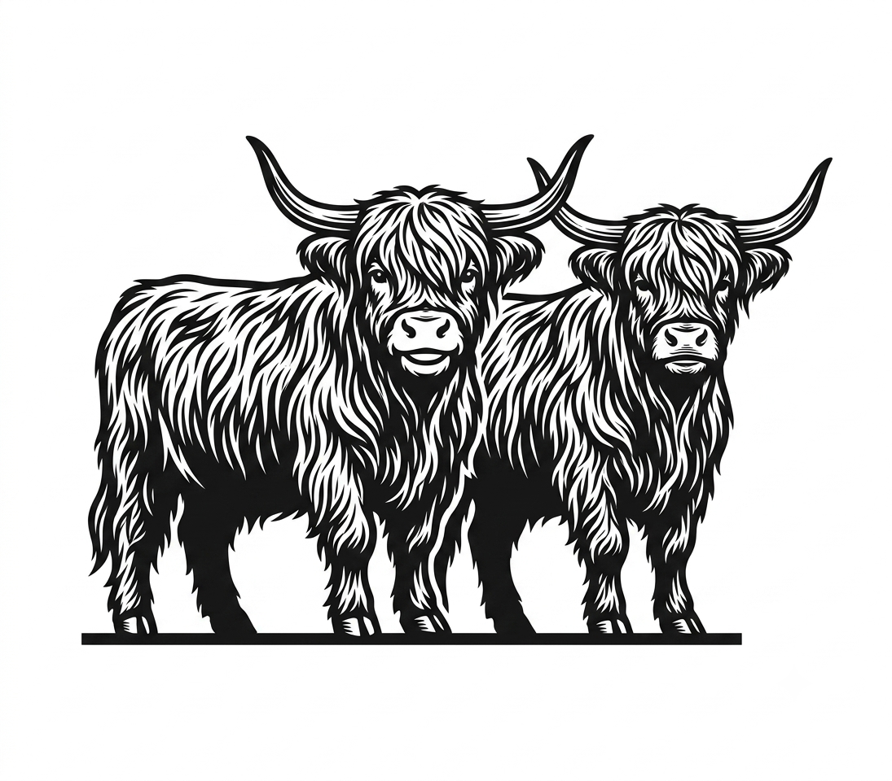
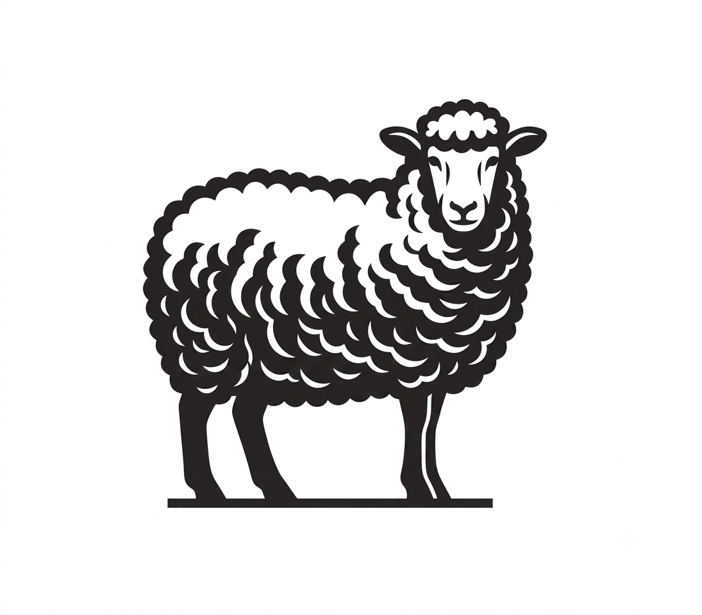

I work right across the bioinformatics pipeline, from building genomes and reading RNA-seq to tracing evolutionary history and writing the software and databases that make an analysis hold up.
I'm a bioinformatician finishing my MSc at Edinburgh, and I like the problems that start with messy data and end with an actual biological answer. My work spans the whole pipeline, from assembling genomes and quantifying gene expression to tracing evolutionary history and writing the software and databases that hold an analysis together.
What I enjoy most is the variety. Across my projects I've put genomes together from raw reads, dug through RNA-seq for the pathways that shift in a mutant, tested where an animal really sits on the tree of life, hardened an alignment toolkit until it stopped falling over, and pulled three databases into a single answer. What ties it together is curiosity about the biology and a bit of stubbornness about getting the method right.
Day to day I work in Python, R and Bash, mostly on HPC clusters, and I'm fussy about pipelines someone else can actually re-run without me in the room.
Each project as a short story: what I set out to do, and what I actually found.
Working on a highly penetrant infertility variant in a cattle breed. Using Oxford Nanopore (ONT) and Illumina reads, I first built a high-quality genome, polished it into a clean assembly, and then ran the downstream analysis from there. Details kept brief, as this is ongoing work under non-disclosure.